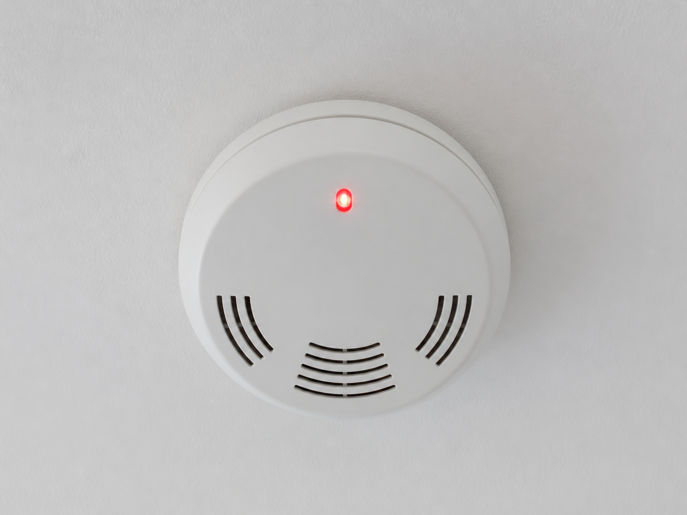
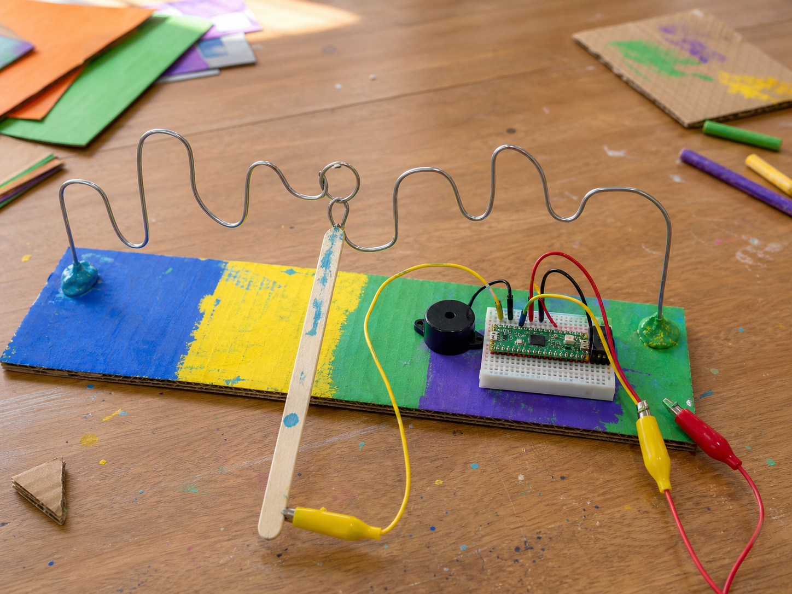

Smoke alarm
DetectSmoke in the air
DecideThere is a fire
DoSound the alarm
A buzzer makes a sound the moment your code switches it on.
An active buzzer has its tone built in, so it beeps at one fixed pitch. You switch it on and off rather than choosing notes.
Your projects can use it for an alarm, a warning, a countdown, or a fanfare when somebody wins.


from gpiozero import Buzzer
buzzer = Buzzer(12)
buzzer.on()from picozero import Buzzer
buzzer = Buzzer(16)
buzzer.on()buzzer.off(), buzzer.toggle() and buzzer.beep(). Give beep() an on_time and an off_time to set the rhythm.